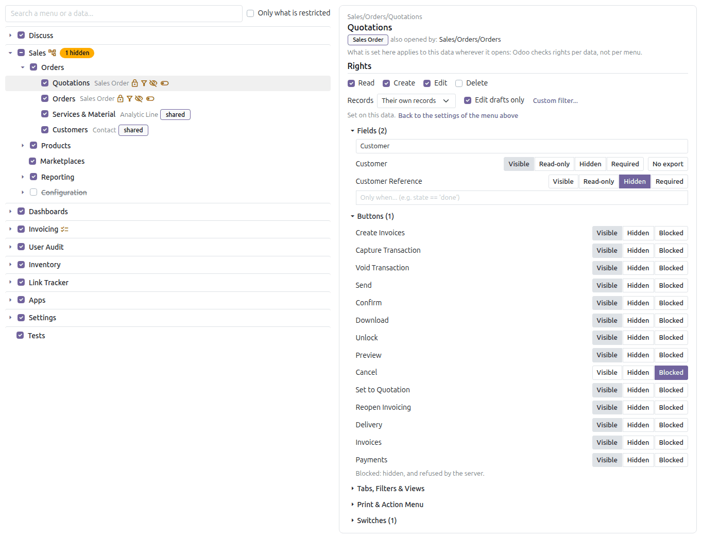
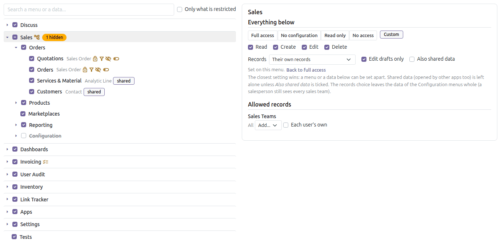
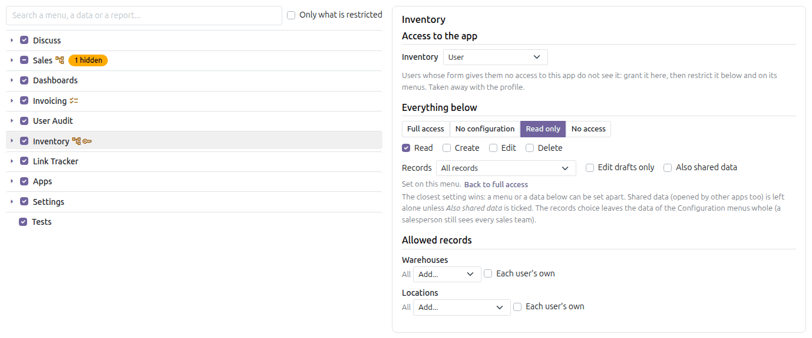
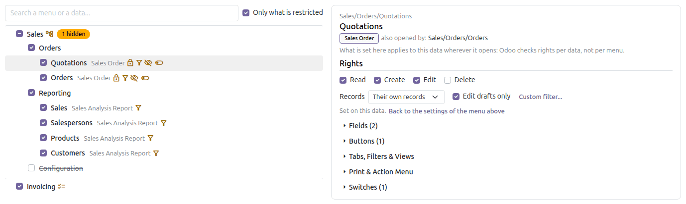
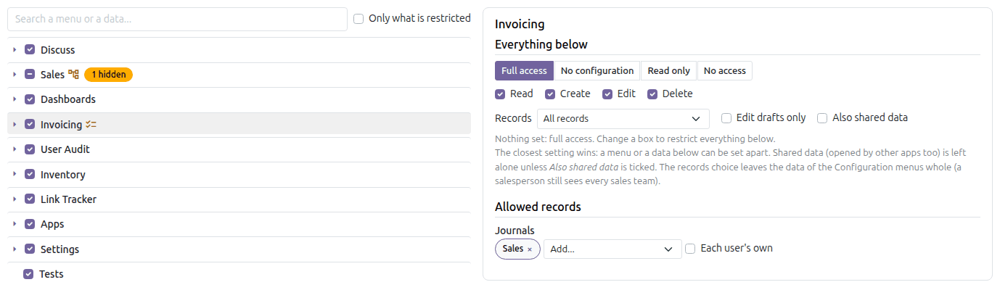

Which records, in one click
Every kind of data has its rights and its filter. The buttons write the usual filters for you, offered only when the data has what they need; Odoo's filter editor does the rest.

Quotations: no delete, and only their own.
Decide, for each group of employees, what they see and what they do not, right on the menus of your database: click an app or a menu and set what its users may read, create, edit and delete, which records they see, which fields, buttons, pages and reports, and open an app their user form leaves out. From an app of its own, without writing code, and enforced on the server.
This app is published as a beta, and the first stable release will be shaped by what you tell us. Every feature is covered by automated tests, but access rules touch every screen of Odoo: build and check your profiles on a copy of your database first, with Test as User, before you give them to your users.
Tell us what works, what does not and what you miss:
Group users into access profiles. A user may carry several: they combine like Odoo groups, and an override profile always wins, for a blanket such as "Read Only" stacked on top. A user with no profile is not restricted at all.
The Menus & Apps tab shows the real menus of your database. Untick a menu to hide it with everything below it. Click a menu: beside the tree, decide what its users may do there, on one screen.

Quotations: their own, drafts only for editing, no delete, the customer reference hidden, Cancel blocked.
Click an app or a submenu: one level (full access, no configuration, read only, no access) or your own rights and records, for all the data below it, menus added later by other apps included. A menu or a data below can be set apart: the closest setting wins.

Sales: their own records, edit drafts only, Configuration hidden.
A buyer whose user form gives no Inventory access? Click Inventory, pick Inventory: User under Access to the app, and set it read only: the profile's users get the app, and only what the profile allows in it. Remove them from the profile and the app goes with it.

Inventory granted as User, read only for this profile.
Each menu carries a mark for what is restricted on it: rights, records, fields, buttons, reports, switches. Tick Only what is restricted and the tree shows exactly what the profile changes.

Everything this profile restricts, and nothing else.
Click Invoicing to pick its journals, Inventory its warehouses, Point of Sale its shops, Sales its teams. Everything that belongs to them follows: allowing two journals also filters their entries, journal items and payments. Or tick Each user's own and set them on each user's form: one Cashier profile, each cashier on their own shop.

Invoicing: only the Sales journal.
Every kind of data has its rights and its filter. The buttons write the usual filters for you, offered only when the data has what they need; Odoo's filter editor does the rest.
Quotations: no delete, and only their own.
Working hours per day in the timezone of the profile, allowed networks, one session per user. Checked at sign-in and on every request: a session ends when the working hours are over.

Cashiers: Monday to Saturday, 09:00 to 22:00 Dubai time, from the shop network only.
The salesperson only has the Orders and Products menus of Sales, only their own quotations, no costs or margins anywhere, and no Send message in the chatter.

A quotation seen by a salesperson: no margin, no cost, Log note only.
Prefer a list? Restrict an App shows an app's menus, data, reports and actions with a checkbox each, and writes the same rules.

Sales, at the level "User, without configuration".
A salesperson, sales read only, an accountant without configuration, an auditor, a warehouse operator, a purchase user, a cashier, an HR officer without salaries, and for any app a user without configuration or a read-only user. Only the templates of the apps you have installed are offered.

The profile created is an ordinary one: change anything in it afterwards.
The user form shows the effective access of the user, all of their profiles combined, and which profile, and which menu, set each line.

Rights and record filters, model by model.
Every change of a profile, of its switches and of its lines is logged in its chatter.

Lines added, changed and removed, by whom.
Access profiles take access away, and can open an app a user form leaves out; nothing else is ever given.
Is a hidden field really hidden?
Yes. It leaves the screens, and the server blanks its value in everything a user, the browser console or a script reads, and refuses to filter, group or export on it.
Can Quotations and Orders have different rights?
Not on the server: both open the same data, and Odoo checks rights per data. Hide one of the two menus, or use a condition on a field or a button (only on confirmed orders, for instance).
Can a user carry several profiles?
Yes. Additive profiles combine permissively, like Odoo groups; an override profile always applies. Test as User shows the result.
Can I move my profiles to production?
Yes: export them from the test database and import them on production. What production lacks is listed on the profile.
It is a beta: can I use it?
Yes, with the usual care: try your profiles on a copy of your database first. Your reviews, bug reports and ideas are welcome: they decide what comes in the first stable release.
Who manages the profiles?
The members of the Access Management group, in the Access Manager app: the Administrator from the start, and anyone you add on their user form. They need no Settings rights.
What happens when I uninstall it?
Every restriction disappears with it, and so does the access the profiles granted. The groups set on the user forms are never touched.